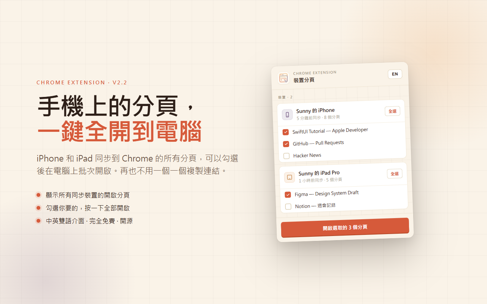
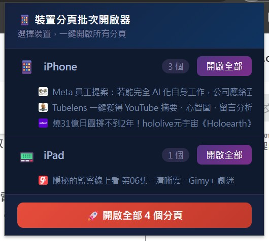
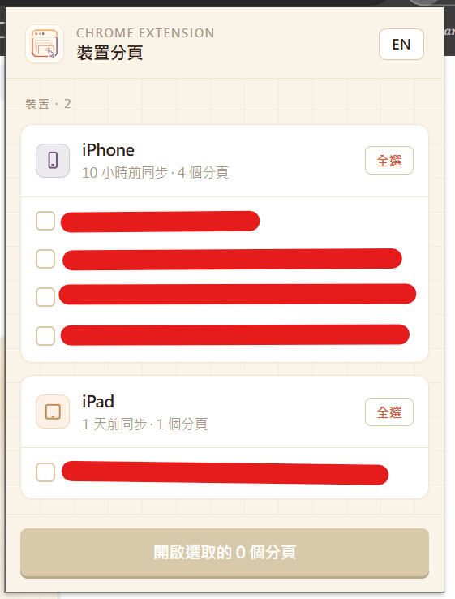
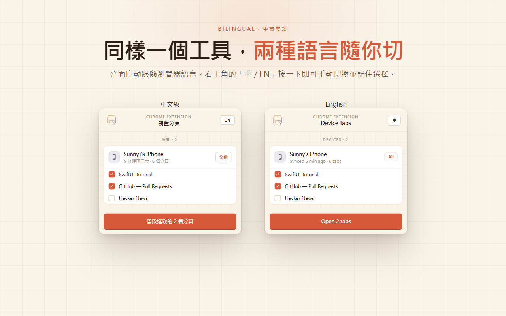
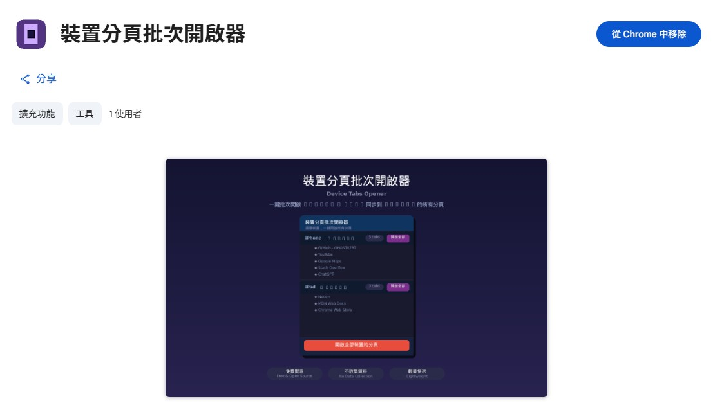
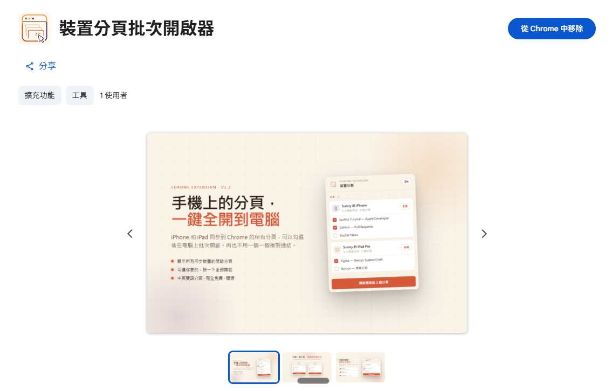
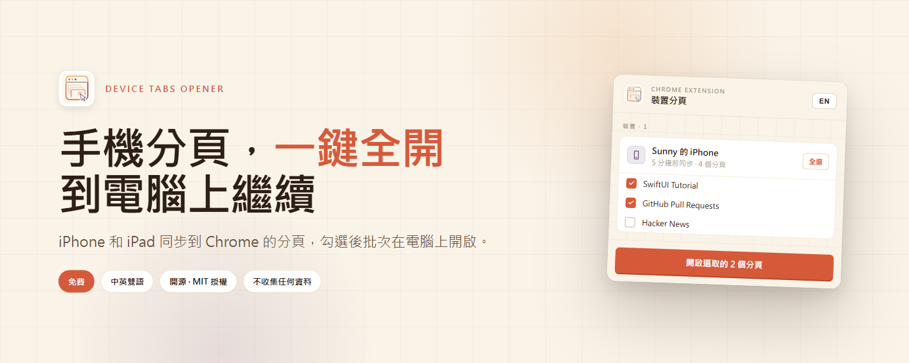
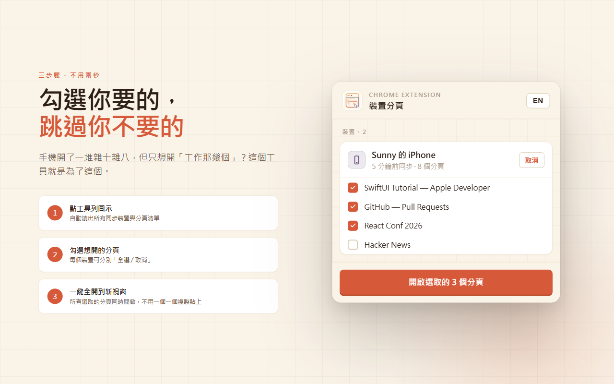
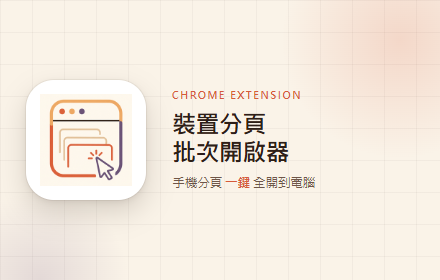

Device Tabs Opener v2.1.0 上架後，功能面已完成跨裝置分頁的批次開啟。v2.2.0 這一輪集中處理視覺與互動：整套 UI 重做、加上中英雙語切換、把「整裝置一鍵」拆成「分頁層級勾選」。送 Chrome Web Store 審核中。

# 起點：v2.1.0 留下的兩個落差
v2.1.0 的目標是把功能跑通，介面採高飽和深色配色，每個裝置配一個整批開啟按鈕。實際使用一段時間後，兩個落差浮出來：
- 1. 視覺基調與 Chrome Web Store 商店頁的調性差距 — 深色高飽和適合短時間 popup，但放到 1280×800 promotional 截圖時，整體呈現偏 game demo 風格，跟「日常生產力工具」的定位有距離。
- 2. 互動單位太粗 — 同步進來的分頁常常包含十幾個雜訊頁，「整裝置全開」會把雜訊也一起開出來。實務上每次都要先在手機上手動關掉雜訊，再用工具開啟，等於把篩選成本推回給使用者。
# 四個面向的改動對照
| 面向 | v2.1.0 | v2.2.0 |
|---|---|---|
| Palette | 深藍紫主體、紫色按鈕、紅色 CTA | 米白 #faf3e8 底、暖橘 #d65a3a primary、赤陶 / 紫 / 黃 accent |
| 互動顆粒 | 裝置層級「開啟全部」按鈕 | 分頁層級 checkbox + 裝置層級「全選 / 取消」toggle |
| 語言 | 中文 only | 中文 + 英文雙語，右上角 EN/中 切換，chrome.storage 記憶選擇 |
| 資訊密度 | 分頁數量 | 分頁數量 + 各裝置最後同步時間（5 分鐘前同步 / 1 小時前同步） |
| 觸達性 | 瀏覽器預設 focus 樣式 | :focus-visible 焦點環 + prefers-reduced-motion 動畫退場 |
# Palette：Editorial Sunset Coral
這次的配色目標是讓 popup 與商店頁 promotional 截圖共用同一套 design tokens，使整體呈現靠近紙本雜誌 / Editorial 的調性。四個色塊各自分工：
- 米白
#faf3e8— 底色與卡片背景，模擬印刷紙感。 - 暖橘
#d65a3a— primary，CTA 按鈕 + 焦點字色 + chips 邊框。 - 赤陶 / 紫 / 黃 — accent 三色，用在 logo 三色塊與 promo 視覺，避免單一橘色過於壓迫。
- 黑色 / 灰色 — 主體文字與輔助文字，靠對比承載資訊密度。
# 互動：把篩選還給使用者
把整批按鈕拆成三層控制：
- 分頁層級 — 每個分頁 row 一個 checkbox，預設未勾選，使用者自行勾選想開的分頁。
- 裝置層級 — header 提供「全選 / 取消」toggle，整批場景仍能一鍵覆蓋。
- 全域 CTA — 底部按鈕文案動態化：「開啟選取的 3 個分頁」。沒勾選任何分頁時 disable。
結果：原本 30 個分頁的同步場景，使用者能跳過 27 個雜訊只開那 3 個工作分頁。在手機端就不用先手動關閉分頁。


# i18n：兩個 messages.json + 一個 toggle
Chrome Extension 原生支援 _locales/ 目錄結構：
_locales/
zh_TW/messages.json ← 預設
en/messages.json ← 切換
manifest.json 加 default_locale: "zh_TW" 與 storage 權限。右上角 toggle 寫入 chrome.storage.local，popup 重開時優先讀取使用者選擇，缺值時回退到 chrome.i18n.getUILanguage()。

# 觸達性：兩個媒體查詢
:focus-visible— 鍵盤 tab 導覽顯示橘色焦點環，滑鼠點擊保持原樣。prefers-reduced-motion: reduce— 系統開啟減少動態時，全部 transition 退到 0s。- 系統高對比模式 — 由瀏覽器原生樣式處理，未覆蓋 CSS。
# Logo 與 Web Store 上架素材
Logo 重畫 128px：暖橘漸層底襯瀏覽器 chrome 圖形（三點 + 視窗），紫色描邊 + 黃色滑鼠箭頭點。色塊與 popup palette 共用。
Promotional 截圖五張全部換暖色 Editorial 樣式：
- Hero (1280×800) — 「手機上的分頁，一鍵全開到電腦」+ popup mockup
- Bilingual (1280×800) — 中文版 / English 兩張卡片並排對照
- Select (1280×800) — 「勾選你要的，跳過你不要的」+ 三步驟編號清單
- Tile Small (440×280) — logo + 標語 + 「手機分頁 一鍵 全開到電腦」
- Marquee (1400×560) — 「手機分頁，一鍵全開 到電腦上繼續」+ 四個賣點 chips（免費 / 中英雙語 / 開源 MIT 授權 / 不收集任何資料）
線上 Chrome Web Store 商店頁對比


完整 promo 素材



# 打包與審核狀態
打包成 device-tabs-opener-v2.2.0.zip，31 KB，9 個檔（含 _locales/），排除 README / LICENSE / promo / backup。2026-05-19 送 Chrome Web Store 審核，通常 1-3 個工作天。線上版本 v2.1.0 在審核期間維持運作，使用者體驗無斷層。
# 連結
- GitHub — GHOST8787/device-tabs-opener
- Chrome Web Store — v2.1.0 線上中，v2.2.0 審核中
- 授權 — MIT License